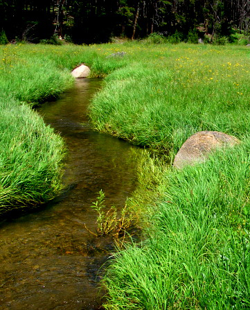

Item #: SCP-002
Object Class: Euclid

SCP-002 in its containment area
Special Containment Procedures: SCP-002 is to remain connected to a suitable power supply at all times, to keep it in what appears to be a recharging mode. In case of electrical outage, the emergency barrier between the object and the facility is to be closed and the immediate area evacuated. Once facility power is re-established, alternating bursts of X-ray and ultraviolet light must strobe the area until SCP-002 is re-affixed to the power supply and returned to recharging mode. Containment area is to be kept at negative air pressure at all times.
Teams including a minimum of two (2) members are required within 20 meters of SCP-002 or its containment area. Personnel should maintain physical contact with one another at all times to confirm there is another person present as perception may be dulled, skewed, or influenced by proximity to the object.
No personnel below Level 2 are permitted within SCP-002. This requirement may be waived via written authorization from two (2) off-site O5-level administrators. Command staff issued such a waiver must be escorted by at least five (5) Level 3 Security personnel for the duration of their contact and must temporarily surrender their rank and security clearance. Following contact, command staff will be escorted at least 5 km from SCP-002 to undergo a seventy-two (72)-hour quarantine and psychological evaluation. If deemed fit for return to duty by psych staff, rank and security clearance may be restored when quarantine expires.
Description: Refer to the Mulhausen Report [cross-ref:document00.023.603] for details related to object's discovery. SCP-002 resembles a tumorous, fleshy growth with a volume of roughly 60 m3 (or 2000 ft3). An iron valve hatch on one side leads to its interior, which appears to be a standard low-rent apartment of modest size. One wall of the room possesses a single window, though no such opening is visible from the exterior. The room contains furniture which, upon close examination, appears to be sculpted bone, woven hair, and various other biological substances produced by the human body. All matter tested thus far show independent or fragmented DNA sequences for each object in the room.
Reference: To date, subject has been responsible for the disappearances of seven personnel. It has also in its time at the facility further furnished itself with two lamps, a throw rug, a television, a radio, a beanbag chair, three books in an unknown language, four children's toys, and a small potted plant. Tests with a variety of lab animals including higher primates have failed to provoke a response in SCP-002. Cadavers as well fail to produce any effect. Whatever process the subject uses to convert organic matter into furnishings is apparently only facilitated by the introduction of living humans.
view Mulhausen Report docid:00.023.603
Mulhausen Report [00.023.603]
The following is a brief report detailing the discovery of SCP-002
Subject was discovered in a small crater in northern Portugal where it struck the Earth from orbit. Encased in a shell of thick rock, the fleshy exterior of the object was exposed by the impact. A native farmer happened upon the site and reported his findings to the village elder. Subject gained SCP attention when a Level 4 agent posted in the area detected a small radioactive anomaly generated by the object.
A collection squad of SCP security personnel led by General Mulhausen was immediately dispatched to the area where they quickly secured the subject in a large container and performed initial testing with subjects recruited from the nearby village. Three men individually sent into the structure subsequently disappeared. Upon discovering this deadly property of the subject, General Mulhausen issued a Level 4a Termination Order of any witnesses (roughly 1/3 of the village) to ensure no outside knowledge of the object and initiated its transport to SCP facility [DATA EXPUNGED].
During preparation for transport, four SCP security personnel were inexplicably drawn inside the object where they too immediately disappeared. Following inspection, it appeared as if the object had "grown" several new furnishings and was beginning to look like the interior of an apartment room. General Mulhausen immediately ordered the requisition of several Class III HAZMAT suits for the remaining security team members, who proceeded to lift the container onto a waiting freight ship for transport to the SCP containment facility.
[DATA EXPUNGED]
[DATA EXPUNGED]
Following the termination of General Mulhausen, SCP-002 was re-secured by SCP staff and brought into special containment in [CLASSIFIED], where it currently resides. Command staff with any authority below Level 2 have been denied access to the SCP-002 container without prior approval of at least two Level O5 command staff after the Mulhausen incident.
Item #: SCP-003
Object Class: Euclid
A close up of SCP-003's circuitry
Special Containment Procedures: SCP-003 is to be maintained at a constant temperature of no less than 35°C and ideally kept above 100°C. In event of total power failure, assigned personnel must use their body heat to keep SCP-003-1 above the critical temperature. All personnel who have come in physical contact with SCP-003-1 are to immediately report for sterilization afterwards.
SCP-003-1 must not be removed from SCP-003-2 except in case of emergency procedures detailed above. Any significant change in SCP-003-2's rune activity (including pattern, frequency, or color) should be reported within three (3) hours of occurrence. Cessation of rune activity must be reported immediately. SCP-003-2 must be supplied with power via the source designated Generator 003-IX at all times; refer to attached documentation for details.
Description: SCP-003 was located by remote viewing team SRV-04 Beta (see attached documents). SCP-003 consists of two related components of separate origin, referred to as SCP-003-1 and SCP-003-2.SCP-003-1 appears to be composed of chitin, hair, and nails of unknown biology similar to [REDACTED], arranged in a configuration similar to that of a computer motherboard. Testing reveals SCP-003-1 to predate earliest known circuit boards by [REDACTED]. SCP-003-1 is considered sentient but not actively dangerous except under certain conditions (see addenda and attached documents).
SCP-003-1 was found on a stone tablet, SCP-003-2, on which it currently resides. The runes on SCP-003-2 are not part of any known language, and flicker with pale tones. These are effects of communication, interpretable by [DATA EXPUNGED]
Analysis has shown that SCP-003-1 and SCP-003-2 have different origins. SCP-003-2 is controlled by a (non-biological) internal computer, the contents of which are mostly inaccessible without risk of damaging SCP-003-2. SCP-003-2 is capable of controlled emissions of radiation, including heat and [REDACTED]. It is considered probable that SCP-003-2 was created for the purpose of containing SCP-003-1. Methods detailed in Addendum 003-01 have allowed access to some data contained in SCP-003-2; while interpretation is not conclusive, contents may refer to a past and/or potential future ██-class restructuring event caused by SCP-003-1.
SCP-003-2 contains an internal power source of [DATA EXPUNGED], which appears to have been losing power since ██████████ before discovery by SRV-04 Beta. It appears possible that SRV-04 Beta was deliberately contacted by SCP-003-2 via [DATA EXPUNGED] Other organizations have also been alerted to SCP-003's existence, possibly by similar means. Despite this activity, SCP-003-2 does not appear to be sentient, based on [REDACTED] and its lack of reaction to [REDACTED] including M03-Gloria procedures.
When SCP-003 drops below the temperature of 35°C, both components react.
First, SCP-003-1 enters a growth state characterized by an exponential increase in mass. This growth state consists of two stages. In both stages, SCP-003-1 partially fuels its growth by converting matter around it, starting with any surrounding inorganic material, including atmospheric elements, then nonliving organic material, including cells of dead skin, hair, chitin, enamel, keratin, and other biological materials.
The first stage is the 'default' stage; the second stage begins when SCP-003-1 comes in contact with living organic material. In its second stage, SCP-003-1 may pause, slow or change its growth, and will also reprocess inorganic and nonliving organic elements into functionally similar structures while [DATA EXPUNGED]
While growth is consistent in the first stage, in the second stage SCP-003-1's growth rate is diminished by 20-90% so long as SCP-003-1 remains in contact with living organic material. The percentage is determined by the complexity of the organism(s) in contact with SCP-003-1; as confirmed by [REDACTED] readings, SCP-003-1 appears to devote a large amount of processing power to analysis of living organic material.
During each of SCP-003-1's growth stages, SCP-003-2 releases bursts of radiation that temporarily inhibit SCP-003-1's growth, or reverse this growth when the temperature of SCP-003-1 rises above 100°C. Similar radiation emissions may be produced via [DATA EXPUNGED]
Addendum 003-01: Acting on information gathered from linguistic analysis of SCP-003-2's runes and [DATA EXPUNGED], Research Team M03-Gloria has managed to establish a link between SCP-003 and [DATA EXPUNGED] for analysis of functions. SCP-003-1 must now be considered sentient, and is to be kept a minimum of 1 km from [DATA EXPUNGED] and the resulting "by-product" at all times.
Addendum 003-02: SCP-003-2's power loss has been exacerbated by the procedures performed by M03-Gloria. On orders of O5-██, M03-Gloria will continue procedures.
Addendum 003-03: [DATA EXPUNGED] During this process, SCP-003-1 doubled its mass and began rapid structural growth. Temperature was immediately returned to 100°C. Growth and mass increase of SCP-003-1 continued for 9 minutes and 6 seconds, at which time a sustained radiation spike was produced by SCP-003-2. In response, SCP-003-1 returned to its normal state in 3 minutes and 39 seconds. New growth dissolved into a dusty residue which was collected for analysis. Both SCP-003-1 and SCP-003-2 ceased all detectable activity. SCP-003-2 did not resume activity until connected to [REDACTED] external power source. SCP-003-2's runes glowed uniformly gray and did not resume normal activity for three (3) hours, and afterwards [DATA EXPUNGED] SCP-003-2 no longer appears to be able to maintain containment area at a temperature above 35°C without external power supplied by [REDACTED] (designated Generators 003-III through IX).
Addendum 003-04: The procedure detailed in Addendum 003-03 was repeated, and SCP-003-1 again entered a growth state. After 10 minutes and 13 seconds, SCP-003-2 once again produced a sustained radiation spike. SCP-003-1's growth stopped for 36 seconds, then resumed at its previous pace.
On quadrupling its mass, SCP-003-1 formed a coherent outer shell and body, which initially took a form similar in shape to an ophiuroid (brittle star) of fifteen meters in diameter (including what appeared to be a central processor of three meters in diameter), formed sensory organs that appeared to scan the surrounding environment, and partially converted its containment area to [REDACTED]. SCP-003-1 then breached containment, entering the observation gallery where nine members of M03-Gloria were present. On physical contact with team members, SCP-003-1 entered stage two of its growth, and [DATA EXPUNGED] SCP-003-1 stopped growth for 15 minutes. SCP-003-1 then resumed growth, and rearranged the component parts of the center of its form to the shape of a three-meter-tall female humanoid, with peripheral "tentacles" shifting to extrude primarily from SCP-003-1's newly formed "hair" and spine. SCP-003-1 then produced rudimentary vocalizations and [DATA EXPUNGED]
An unknown Caucasian male, later identified as [REDACTED], approached the compromised containment area in company of a full squad of agents. [REDACTED] claimed to be acting on orders of O5-██ and attempted communication with SCP-003-1. [DATA EXPUNGED] Agent ████ of M03-Gloria successfully restored power to SCP-003-2 and activated backup generators to return the temperature to 100°C. SCP-003-1 returned to its normal state in 21 minutes and 7 seconds, and was successfully re-contained without incident.
All nine members of M03-Gloria affected by SCP-003-1 were afterwards found to be physically unharmed, with no residual effects besides minor psychological trauma. The converted materials of SCP-003's former containment area did not dissolve and are now under analysis.
Addendum 003-05: In light of the previous incident, O5-██ [DATA EXPUNGED] by joint decision of O5-██, O5-██, and O5-██. All M03-Gloria procedures have been indefinitely suspended.
Item #: SCP-004
Object Class: Euclid

SCP-004-1
Special Containment Procedures: When handling items SCP-004-2 through SCP-004-13, proper procedure is vital. The items are not permitted off-site unless accompanied by two (2) Level 4 security personnel. Under no circumstances should any other component of SCP-004 be taken through SCP-004-1. The effects of doing so are as yet unknown, and the current cost of experimentation makes further research impractical. Should any of the objects contained within SCP-004-1 break containment, or the facility be breached, the keys must be brought inside and the door closed prior to activation of Site 62’s on-site warhead. Unauthorized removal of keys from the testing area is grounds for immediate termination.
Level 1 clearance is required for basic access to SCP-004-1; Level 4 clearance is required for use of SCP-004-2 to -13.
Description: SCP-004 consists of an old wooden barn door (SCP-004-1) and a set of twelve (12) rusted steel keys (SCP-004-2 through SCP-004-13). The door itself is the entrance to an abandoned factory in [DATA EXPUNGED].
Chronological History
07/02/1949: A group of three juveniles trespassing on federal property near ██████████ find the door. According to their testimony, they found a set of rusted keys in an iron lockbox and determined what door the keys unlock. The juveniles are taken into custody after they contact Sheriff █████████████████ when one of their friends (SCP-004-CAS01) goes missing.07/03/1949: Local authorities find the severed right hand of SCP-004-CAS01 eight kilometers from SCP-004-1. Other parts of SCP-004-CAS01's body are found scattered as far as 32 km from the factory. Under interrogation, the apprehended juveniles tell authorities that upon opening the door with one of the keys, SCP-004-CAS01 was torn into several pieces, each of which disappeared. At this point, the SCP Foundation takes over the investigation.
07/04/1949: SCP Agent █████ obtains the keys from the local authorities to begin testing. Tests show that SCP-004-2 through SCP-004-13 all fit into a single lock on the large barred door. 12 Class D personnel are assigned to test the effects of the door. Of the twelve (12) test subjects each trying a different key to enter the room, only two (2) survive. Opening the door with any key except SCP-004-7 or SCP-004-12 caused the test subjects to be torn apart in multiple directions; however, no dismembered parts were found until later. At the time of writing, only two (2) parts of each subject have been recovered (with the exception of the subject using SCP-004-█, whose pieces were scattered in close proximity). The others have, for all intents and purposes, vanished from existence.
Of the two surviving subjects, only one (having used SCP-004-7) returned unharmed. The other came back in a near-catatonic state, able only to remove himself from the room and then collapse on the floor, and had to be restrained to prevent him from gouging out his eyes (see Appendix A: Mental Health Effects of SCP-004). The subject using SCP-004-7 said that he had entered a large room, impossibly big for the size of the attached building. After his exit, SCP-004-1 was propped open and an armed squad of Level 3 personnel entered. The size of the room is impossible to measure and the door frame and the individuals in the room are the only part of the room that can be felt or illuminated.
07/16/1949: The juvenile suspects and Sheriff █████████████████ are terminated.
08/02/1949: █████████████████ is declared a hazardous area "due to unexploded ordnance" and fences erected in order to prevent civilian ingress. Tests to determine safety of exposure to environment behind SCP-004-1 begin.
12/01/1950: Space-time anomalies resulting from exposure to SCP-004 are confirmed. Testing is suspended until further notice.
07/03/19██: The unaccounted-for remains of SCP-004-CAS01 appear unexpectedly outside SCP-004-1. Despite being killed decades before, the remains of SCP-004-CAS01 are not decomposed in any manner and are still warm to the touch. Blood remains uncoagulated. The remains are remanded for testing.
07/04/19██: The unaccounted-for remains of one of the twelve (12) original test subjects appear in similar manner to those of SCP-004-CAS01. The remains have been designated SCP-004-CAS02. Records suggest that both SCP-004-CAS01 and CAS02 used SCP-004-██.
03/21/1999: With the massive proliferation of nuclear weapons and World War III only ██ years away, construction has begun on a site inside SCP-004-1. The site is to stock supplies for ███████ person-days.
04/21/1999: █████████████████ has ordered the site inside SCP-004-1 to be expanded to include emergency storage for all mobile SCP-███ specimens and a ██-petabyte database for the storage of all SCP data. The facility is now referred to as Site-62.
09/25/2000: Site-62 is operational. Labs and containment units are complete and can contain the most dangerous specimens. Backup of the SCP database has begun.
01/25/2001: Due to time anomalies (see “Space-Time Anomalies” below), all personnel working at Site-62 are now required to reside on-site permanently. Families of personnel are to be informed that loved ones perished in an industrial accident. Cloned bodies have been prepared for funeral.
07/14/2003: Massive power outage across Northeast United States and through Canada. Due to the initial failure of multiple SCP generators, Site-62 was without power for fifty-three (53) minutes. During those fifty-three (53) minutes, those on site were completely without any source of light. They reported "sensing" creatures and people, although no abnormal entities could be seen or felt. Selected facility personnel were allowed to read ████████████ (Appendix A) and said the creatures "sensed" were of humanoid size but otherwise similar to the massive green creature described.
Space-Time Anomalies
SCP-004 seems to propagate spatiotemporal anomalies. Personnel leaving the facility report losing time. Those who have been in the site for weeks insist that they had only been in the facility for several days, and records of work completed and supplies consumed support their claims. Other temporal anomalies involve SCP-004-2 through -13, especially the reappearance of SCP-004-CAS01 and SCP-004-CAS02 exactly ██ years after using SCP-004-██. ████████████████████ has been assigned to investigate all aspects of these time anomalies. Spatial anomalies include the impossibly large dimensions of the area opened by SCP-004-7. Similarly, the 2003 blackout incident suggests that there exists an alternate plane of existence within the same space that Site-62 occupies.
Further Notes
Testing on SCP-004 reveals that ten (10) of the keys open SCP-004-1 on a dimension where the laws of physics and topology are significantly different than those of our home dimension. Test subjects meeting these hostile conditions are torn apart, their body parts deposited in various locations, only three of which have been verified to be on Earth. Material deposited at two of these points appears immediately; material deposited at the third appears exactly ██ years into the future. The other seven locations are currently unknown.
Current testing focuses on two avenues of research. The first is finding ways to survive SCP-004’s hostile topologies. The second [DATA EXPUNGED] suggest that SCP-004-2 through -13 may open doors other than SCP-004-1.
Appendix A: Mental Health Effects of SCP-004-12
All Class D personnel using SCP-004-12 return in a catatonic state, unable to speak. Some may have enough energy left to try to claw out their eyes. Of the 16 subjects, only 4 have survived. Only one has regained speech, following long-term psychotherapy. He was able to tell the psychiatrist that he saw a massive green creature, so large that much of its body extended beyond his field of view. He reported innate fear and sudden recognition, “as if it were something buried deep in [his] primal fears,” and forced implantation of “incomprehensible” memories. Subject displays acute anterograde and retrograde amnesia.
Appendix B
Item #: SCP-004-14
Date of Discovery: 09/02/1950
Origin of Object: Object was discovered elsewhere in factory area, in the previously undiscovered manager's office.
Description: Object appears as a large (182 cm X 129 cm), unvarnished wooden box. The box may be unlocked by the "safe" key, SCP-004-7, as well as five of the "unsafe" keys (see Document SCP-004-1).
Upon unlocking SCP-004-14 with SCP-004-7, the box opens automatically on hinges. The volume of the space inside is precisely five times greater than the outer dimensions imply. Items placed within while the lid remains open do not affect the weight or any other properties of the box. When the lid is closed and locked, however, all items inside vanish irretrievably. Personnel locked inside the box are also irretrievable, although losing personnel in this fashion appears to affect significantly the dreams experienced by [DATA EXPUNGED].
Item #: SCP-005
Object Class: Safe

A close up of SCP-005
Special Containment Procedures: SCP-005 poses no immediate risk in any direct sense. Even so, its unique functions require special measures be taken to restrict access and manipulation of the object. Approval of at least one (1) Level 4 personnel is required for the removal of object from its containment area.
Description: In appearance, SCP-005 resembles an ornate key, displaying the characteristics of a typical mass produced key used in the 1920s. The key was discovered when a civilian used it to infiltrate a high security facility. SCP-005 seems to have the unique ability to open any and all forms of lock (See Appendix A), be they mechanical or digital, with relative ease. The origin of this ability has yet to be determined.
Additional Notes: SCP-005 may be used as a replacement for lost security passes, but only under the supervision of at least one (1) Level 4 personnel. SCP-005 may not be used for vending machine repairs, opening lockers, or for any personnel's spare home key. Removal of the object from the compound will result in immediate termination.
Appendix A: While SCP-005 has been shown to be effective in removing almost any form of locking device, further experiments have shown that efforts to disguise the purpose or identity of a lock have proven at least somewhat successful in defeating SCP-005's ability. In approximately 50% of cases where a volunteer was not able to identify a locking device as such, SCP-005 was not successful in deactivating the device. Due to these results, SCP-005 has been tentatively classified as 'sentient' and further tests are being run to determine its cognitive abilities. However, there are no results that show any traits that prevent it from being able to identify any particular locking device, only that the aforementioned device has been heavily concealed and disguised.
Under direct orders of the founder, access is limited to those with Overseer clearance
Overseer Clearance Granted
Item#: SCP-006
Object Class: Safe
SCP-006
Special Containment Procedures: Whereas the nature of SCP-006 does not warrant any extensive containment, a certain level of secrecy is necessary regarding the object's existence and properties, for obvious reasons. The following procedures are required not for personnel safety, but to deny or hide knowledge of SCP-006's effects from the personnel who interact with it.
1: All personnel interacting with SCP-006 in any physical way are required to wear modified class VI BNC suits. Before personnel are allowed to perform procedures, they must be briefed with Material SCP-006B or SCP-006C. SCP-006A Briefing is the correct one and is restricted to only those with O5 clearance. To assure personnel are wearing suits properly, they are to be submerged into a pool of water. Any air bubbles spotted signify a leak in the suit.
2: Procedures with SCP-006 are to be carried out under extreme surveillance. In case of contact with SCP-006, the commander in charge will announce procedure [EXPUNGED], which the personnel have been briefed to believe to mean high toxicity is present and they must evacuate.
3: Any procedure in which liquid is acquired from SCP-006 must be approved by three (3) O5 level personnel. The liquid is to be transferred in a Quad-Sealant Container and under armed guard.
4: If at any time personnel come into contact with SCP-006 or liquid from SCP-006, they are to be confined and terminated after sufficient studies are done. Due to the nature of SCP-006, the most effective termination method is incineration. (For full report, see file SCP006-TerO5)
Description: SCP-006 is a very small spring located 60 km west of Astrakhan. Due to political reasons, Foundation Command was aware of its existence since 18██, but unable to secure it until 1991. On the spot of the spring, a chemical factory has been constructed as a disguise, with the majority of laborers under Foundation and/or Russian control. The liquid emitted from the spring has been chemically identified as simple mineral water in 1902, but has the unusual property of "health".
Ingesting the liquid produces the following properties in human beings: the ability to regenerate DNA damaged by sufficient duplication, heightened excitement of cellular duplication, vastly improved abilities in the repair of damaged tissue, and a frightening increase in the effectiveness of the human immune system. Upon testing the liquid on animal subjects, hostile bacteria and viral agents were destroyed immediately. Many reptiles and birds were unaffected, while higher primates experienced the same benefits as humans.
Addendum 1: Permission for comparing samples of SCP-006 for similarity to SCP-500 has been requested by Dr. ██████-6
Item #: SCP-007
Object Class: Euclid
Special Containment Procedures: SCP-007 is to be contained in a sealed room measuring 10 m on each side. Room is to be furnished comfortably as a living area, along with whatever items are requested by ███████████████ (hereafter referred to as Subject), given that providing Subject with requested items would not compromise security. Subject is not to be allowed to leave the room, and is to be detained with force if necessary.
Description: SCP-007 is located within a cavity in the abdomen of Subject. Subject is a Caucasian male, physically approximately 25 years of age (subject claims to be 28) and 176 cm in height. Most of Subject's abdomen (muscles, skin, and organs) is absent, though Subject does not appear to suffer because of this. Instead of normal flesh, a sphere composed of soil and water is present, though it does not actually come into contact with Subject's body at any point. The sphere appears to be in most respects a miniature near-duplicate of the Earth, approximately 60 cm in diameter, although continental alignment is not consistent with that of any alignment known in Earth's history. Sphere has its own weather patterns and negligible gravitational pull, in addition to microscopic organisms somewhat resembling those of modern-day Earth inhabiting it. Two intelligent species have been observed, though contact and communication with either has yet to be made. Technology levels of observed species must be checked at least once a week and, as of ██/████, are approximately equal to that of 15th-Century Earth.
Subject claims to be named ███████████████, but no records of such a person can be found. Subject does not require food or water, and while he has been observed consuming both, what happens to such substances after being swallowed is unknown. Subject is intelligent (IQ has been measured at 128) and amiable, and regards the planet in his abdomen as a minor curiosity about his body. Subject seems to experience no stress about his unusual condition. When questioned about planet's origins, Subject replied, "I just woke up one day, and there it was. I don't have any idea how it got there." Subject has provided a Social Security number and driver's license number and requested that they be checked against known records. When checked, it was discovered that neither had yet been allocated.
Dr. ███████ has a weekly chess game with Subject, during which Subject's mental health is evaluated. Dr. ███████ reports that Subject does not seem to mind the restricted living environment, and has yet to attempt to escape or show signs of violence or mental illness, though he has repeatedly requested a computer with an internet connection. It is recommended that this not be provided as it may be used to compromise security.